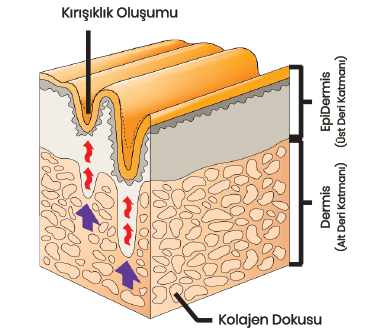
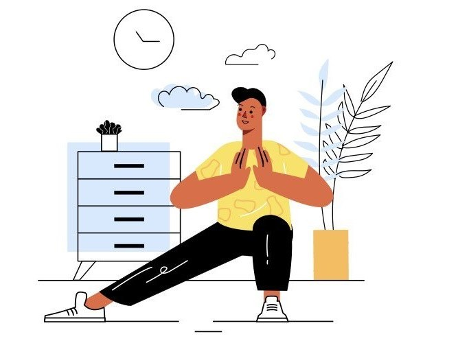

Yaşlanmayı Yavaşlatmak
Hepimizin fark ettiği gibi yaşadığımız hayatın belirli bir evresinden sonra hem bedenimiz hem de zihnimiz daha önce gösterdiği performansı göstermemeye başlar. Çevremizdeki herkes benzer yaşam döneminde benzer fonksiyon kayıplarına uğradığı için bu süreç bize yaşamın doğal bir parçası olarak görünür. Peki ya bu süreç yavaşlatılabilseydi? Bazı fonksiyonlarımızı geri kazanmak istemez miydik?
Aşağıdaki bilgiler sağlıklı, ek hastalığı olmayan bireyler içindir. Ek hastalığı olanların doktorlarına danışmadan uygulamaması gerekir.
Neden yaşlanırız?
İnsanın doğal genetik programı yeni nesilleri üretmek üzerine planlı olarak çalışır. Üreme çağında vücut en aktif ve esnek dönemini yaşar. Bunun devamında kendi çocuklarını üreme çağına getirene kadar aktif ve güçlü kalacağı şekilde kalır. Bu dönem bitip orta yaş dediğimiz kısma geldiğinde ise metabolizma yavaşlar. Metabolizmanın yavaşlaması dış faktörlerden etkilenir. Kendini sedanter bir hayata alıştıranlarda bu yavaşlama çok daha hızlıdır. Egzersiz yapanlarda bu yavaşlama çok çok daha minimaldir. Bunun dışında vücudun toksik yükünü arttıran bir beslenme veya çevresel maruziyet (ilaçlar, kimyasallar, kozmetik ürünler, hava kirliliği vs) metabolizmanın yavaşlamasına ciddi katkı sağlayacaktır. Metabolizma hızı iç faktörlerden de etkilenir. Düzenli olarak stres altında olmak, uykusuzluk, var olan kronik hastalıklar bu konudaki en temel faktörlerdir Metabolizma neden yavaşlar? Çünkü mitokondriler yavaşlar. Mitokondrilerimiz bizim hücrelerimizin küçük enerji santralleridir. Bu santraller her hücrenin işini yapması için ihtiyaç duyduğu enerjiyi üretirler. Bu enerji santralleri toksinlerden ve serbest oksijen radikallerinden ciddi olarak etkilenirler. Yaşlanmanın bir de genetik programlanmış kısmı bulunur. Yaşam süresiyle orantılı olarak birlikte DNA'larımızda telomer dediğimiz koruyucu uç zincirde kısalma olur. Yaşlanma bir bütün içinde ilerler. Bir sistemin fonksiyonunda azalma diğer sistemlerin de fonksiyonlarını etkiler. Örneğin cinsiyet hormonlarının üretimi yaşa bağlı olarak azalmaya başlar. Testesteronun azalması ise kas kütlesinin azalmasına ve ciltte sarkmalara neden olur. Azalan kas kütlesi kişinin daha sedanter olmasını tetikler. Hareketsizlik ise kemik dokunun yumuşamasına veya kırılganlaşmasına yol açar. Bu evreye gelmiş bir yaşlanma senaryosunda ise geri dönüş çok zordur.
Ne Yapabiliriz?
Yapabileceklerimizi birkaç başlık altında toplayabiliriz
- Egzersiz
- Beslenmenin düzenlenmesi
- Toksin maruziyetinin sınırlandırılması
- Stres yönetimi
- Sistemin takviyelerle desteklenmesi
- Biyoeşdeğer hormon replasman tedavisi
- Zihni çalıştırmak
Egzersiz
Yaşlı erişkinlerde aerobik egzersiz, mitokondri üretimi ile ilgili faktörleri (mtDNA kopya sayısını, mitokondriyal transkript ve protein ekspresyonunu, oksidatif enzim fonksiyonunu), enerji üretimini (ATP sentezini) ve toplam mitokondriyal hacmi artırarak mitokondriyal disfonksiyonu (fonkiyonlarda bozulmayı) kısmen tersine çevirir (1, 2, 3)" Mitokondriyal üretim, mitokondriyal gen ekspresyonu ve mitokondriyal fonksiyon (Kreb döngüsü/MRC enzim aktiviteleri (CS ve COX) kapasitesi) yaştan bağımsız olarak aerobik egzersiz ile artacaktır.(2) Yaşlı yetişkinler ile yapılan bir klinik çalışmada, 12 haftalık düzenli orta yoğunluklu aerobik egzersiz toplam mitokondriyal içeriği (mtDNA ve kardiyolipin), mitokondrial fonksiyonları artırdığı ve insülin direncini azalttığı gösterilmiştir (1) Direnç egzersizinin mitokondriyal gen ekspresyonunu arttırdığı, mitokondriyal ve antioksidan enzim aktivitelerini geliştirdiğini ve yaşlı yetişkinlerin iskelet kasındaki oksidatif hasarı azalttığını açıkça gösterilmiştir (4, 5) Zamanla egzersiz, sistemik inflamasyon (yangı) ve kanser gibi yaşa bağlı kronik hastalıklara karşı koruma sağlayan, strese daha dayanıklı, homeostatik bir düzeye fizyolojik adaptasyonlara yol açar (6) Fiziksel aktivitenin anti-inflamatuar yararları geleneksel olarak viseral yağ kütlesindeki azalmaya ve/veya her egzersizle birlikte bir anti-inflamatuar ortamın indüklenmesine atfedilse de, birden fazla hücre popülasyonunda mitokondriyal gençleşmenin, iltihaplanmanın gelişmiş kontrolü yoluyla bağışıklığı eşzamanlı olarak arttırması olasıdır. Son 50 yılda elde edilen etkileyici bir bilgi birikimi, düzenli egzersizin tüm nedenlere ve kardiyovasküler ölüm risklerini azalttığını, sağlığı ve uzun ömürlülüğü iyileştirdiğini ve hareketsiz bir yaşam tarzının doğası gereği güvensiz olduğunu kesin olarak kanıtlamaktadır. Her iki ana egzersiz türü, aerobik ve direnç antrenmanı, çoklu sistemik faydalar sağlar ve mitokondriyal disfonksiyon, geri dönüşüm eksikliği, bozulmuş kalite kontrol ve sistemik inflamasyon dahil olmak üzere yaşlanmanın başlıca ayırt edici özelliklerine karşı koruma sağlar (7) Düzenli ve orta şiddette egzersiz sizi yaşlanmanın olumsuz etkilerine karşı sizi koruyacaktır. Burada önemli olan egzersizin düzenli ve devamlı olmasıdır. Egzersize başlamak için yaşlanmayı beklemek, korunabilecek sağlık şartlarını azaltacağından, egzersize gençken başlanmak önerilir. Mevcut halinizle zaten yaşlandıysanız veya ek bir hastalığınız varsa egzersize başlamadan önce doktorunuz ile görüşmeyi ihmal etmeyin. Ağır egzersizler genç-yaşlı herkes için zararlı olma potansiyeli taşır. Vücut ağır egzersizi stres olarak algılar. Yaşlanma üzerinde faydadan çok zarara neden olacaktır.
Beslenmenin düzenlenmesi
Beslenme konusu çok derin ve önemli bir konudur. Mitokondriyal beslenmenin detaylarından daha önceki bir sayıda bahsetmiştik. Bugün ise birkaç temel konudan bahsedeceğiz
İlk yapmamız gereken zararlıları ortadan kaldırmak. Vücudumuza ne kadar az yük getirirsek, onun sağlıklı bir organizma düzeni için o kadar enerjisi kalır.
Zararlıların en başında hayatımıza endüstri devrimi ve sonrasında giren kimyasal gıda koruyucuları ve renklendiriciler bulunmaktadır. Kaba bir tabirle ne olduğunu anneannenizin anlamadığı şeyler içeren gıdalardan uzak durun.
Zararlı listesinin devamında ise doğal zararlılar gelmektedir. Bunlar işlenmiş karbonhidrat ve şekerdir. İşlenmiş karbonhidratlar ile şeker arasında vücut açısından büyük bir fark bulunmamaktadır. Her ikisi de kan şekerini hızla yükseltir. Buna bağlı olarak insülin pik yapar (ki kendisi proenflamatuardır (yangıya zemin hazırlar)). İnsülin ile hücre içine alınan bu şekerin kullanılmayan büyük bölümü önce glikojene sonra da yağlara dönüşür. Yağ dokunun bu şekilde artması da vücutta enflamasyona yol açar. Bu yolun devamı tip 2 diyabet ve Alzheimer gibi insülin aracılı hastalıklara ve enflamasyonla tetiklenen otoimmün hastalıklara gider. Kanser hücreleri de şekerden enerji elde eder. Bu nedenle de şekerin yoğun kullanımı kanser hücrelerinin çoğalmasına yol açabilir.
Beslenme konusu için ikinci yapılacak basamak yerine koymaktır. Besinlerin yeterli ve doğru kullanılabilmesi için sindirim sistemi sağlam olmalıdır. Hem hayat tarzımız hem de yaşlanma üç yerde sindirim sisteminde eksikliklere yol açabilir. Bunlar sırasıyla mide asidi, pankreas - safra salgıları ve bağırsak bakterileridir.
Mide asidi konusunu bir önceki sayıda uzun uzun konuşmuştuk.
Safra kesesi ve pankreas salgıları hem yaştan hem de beslenme tarzından etkilenir. Yemekten 2-4 saat sonra hazımsızlık, dolgunluk, yağlı, kötü kokulu ve hacimli dışkılama, dışkıda sindirilmemiş gıda, dışkının suda yüzmesi veya klozete yapışıp kolayca temizlenmemesi varsa doktorunuza başvurun. Enzim eksikliğinin yerine konmasında size yardımcı olacaktır.
Bağırsak sağlığı ile ilgili olarak Nisan 21 sayısı tekrar okunabilir. Burada sadece bağırsak bakterilerimizin karakterinin beslenmeden ve ilaç kullanımından etkilendiğini, bu etkinin de sağlığımız üzerinde büyük rol oynadığını hatırlatayım. Bağırsak bakterilerindeki düzensizlik sızdıran bağırsak (leaky gut) dediğimiz bir başka patolojinin de öncüsü olabilmektedir.
Yaşlanma Karşıtı Besinler
Bazı besinlerin yaşlanma üzerine etkileri ile ilgili yapılmış çalışmalar da bulunmaktadır. Bu besinlere yaşlanma karşıtı besinler denilebilir.
Soğan (Allium cepa): Soğan yağı otuz yaşlı sıçana (1.5-2 yaş) dört hafta boyunca verildiğinde, karaciğer ve böbrek fonksiyon bozukluğu göstergelerini, toplam protein ve albümini azalttı, lipid profilini iyileştirdi, monoamin düzeylerini düşürdü ve testosteronu artırdı. Bu durum soğan yağının yaşlanma karşıtı bir madde olarak işlev gördüğünü gösterir (9) Bazı çalışmalar, potansiyel bir yaşlanma karşıtı ajan olarak ve melanin pigment hastalıklarının ve UVB'nin neden olduğu kırışıklık oluşumunun önlenmesinde veya tedavisinde soğan özütünün potansiyel kullanımını önermektedir. (10)
Sarımsak (Allium sativum): Yaşlı farelerde yaşlandırılmış sarımsak özütünün uygulanması hem pasif hem de koşullu kaçınma testlerinde ve ayrıca uzamsal hafıza testinde öğrenme ve hafıza eksikliklerini iyileştirdi ve beyindeki küçülmeyi önledi. Bu, özellikle insanlarda yaşa bağlı bilişsel bozukluk için yaşlanma karşıtı bir çare olarak yaşlı sarımsak özütünün yararlı kullanımını göstermektedir. (11)
Hidroetanollü sarımsak özütünün UVB'ye maruz kalan insan keratinositlerinde foto-hasar ve hücre yaşlanmasına karşı koruyucu etkilerini araştıran bir çalışmanın sonuçları sarımsağın özellikle foto yaşlanma ve hücresel yaşlanmaya karşı anti-aging materyali olarak kullanımını desteklemektedir (12)
Sarımsağın içerdiği Allisin lökosit elastazı inhibe eder. Lökosit elastaz yaşlanmaya dahil olan elastin bozulmasından sorumlu bir proteindir. (13)
İçerdiği Kafeik Asit, S-Allyl Sistein ve Urasil kırışıklık önleyici özellik gösterir. Bu etkinin antioksidan ve iltihap önleyici özelliklerinden kaynaklandığı gösterilmektedir. (14)
Ekstraktının UV-B ışınına maruz kalmış dermal fibroblastlarda fotoyaşlanma önleyici özellikler sergileyebileceğini gösteren çalışma vardır. (16)
Kuşkonmaz (Asparagus officinalis): Etanollü ekstratı elastaz ve hiyalüronidaz enzimlerini inhibe ederek yaşlanmaya karşı durur (15) Ekstraktının UV-B ışınına maruz kalmış dermal fibroblastlarda fotoyaşlanma önleyici özellikler sergileyebileceğini gösteren çalışma vardır. (16)
Brokoli (Brassica oleracea): İçerdiği Quercetin güçlü antioksidan ve antienflamatuardır
Kırmızı Ispanak (Amaranthus tricolor): erkek sıçanlarda kırmızı ıspanak özütü merheminin kolajen, elastikiyet, hidrasyon, sebum ve pigmenti artırmada başarılı olduğu görüldü. Cilt kolajen seviyeleri, tedaviden önce ve sonra önemli ölçüde değişti. Ek olarak, tedaviden sonra cilt elastikiyetinde önemli artışlar kaydedildi Cilt pigmentasyon seviyeleri, tedaviden önce ve sonra önemli ölçüde değişti. (17)
Enginar (Cynara scolymus): Bir çalışmada kullanılan formülasyon, dermal uygulamada ve umut verici yeni bir yaşlanma karşıtı kozmetik bileşen olarak kullanım için güvenli ve etkiliydi. (18)
Enginar yaprağı ekstraktının antioksidan kapasitesini değerlendiren çalışmada elde edilen sonuçlar, beyin ve karaciğerdeki SOD (süperoksit dismutaz), beyindeki GPx (glutatyon) ve karaciğerdeki CAT (katalaz) aktivitesinin, kontrol grubuna göre önemli ölçüde arttığını gösterdi. Bu sonuçlar oksidatif strese bağlı bozukluklarda enginar preparatının kullanımını desteklemektedir. (19)
Karahindiba (Taraxacum officinalis): Karahindiba uygulanan sıçanlarda, testosteron seviyeleri ve spermatogenez aktivasyonu çarpıcı biçimde arttı ve fiziksel hareketler de önemli ölçüde arttı. (19) Bu bulgular, karahindibanın andropoz semptomlarını hafifletmek veya tedavi etmek için güvenli ve etkili bir doğal ilaç olma potansiyeline sahip olduğunu göstermektedir.
Salatalık (Cucumis sativus): iyi bir antioksidan aktivite gösterdiğini ve güçlü anti- hiyalüronidaz ve anti-elastaz aktiviteleri gösterdiğini göstermektedir. Bu araştırmacılar, ekstraktın yüksek askorbik asit içeriğinden dolayı C. sativus'un kozmetikte kırışıklık önleyici bir ürün olarak kullanılabileceği sonucuna varmışlardır (20)
Balkabağı (Cucurbita moschata): Kabak çekirdeği özütü, yaşlanma karşıtı etkisini gösterir. (21)
Soya fasulyesi (Glisin max): yaşlanma, hafıza bozukluğu ve oksidatif stres ile bağlantılı öğrenmeyi tersine çevirme potansiyeline sahiptir
Lactobacillus plantarum tarafından fermente edilmiş soya sütünü, fermente edilmemiş olandan daha iyi bir antioksidan aktivite gösterdi ve histopatolojik gözlem, ekstraktın cildi, dalağı ve karaciğeri koruyabildiğini ve oksidatif hasarı ve iltihabı azaltabileceğini gösterdi. Fermante öz, antioksidan enzimleri etkin bir şekilde artırdı (22)
Çalışmaların genelinin deney hayvanları ile yapıldığı dikkatinizi çekmiştir. İnsan çalışmaları çok pahalı çalışmalardır ve genelde patent almak isteyen firmalarca desteklenir. Gıdaların patenti alınamadığından gıda çalışmaları bu destekten mahrum kalır.
Beslenmenin bir diğer yönü ise zamanlamasıdır. Vücut tek bir zaman diliminde enerjisini tek yöne kanalize etme eğilimindedir. Eğer dinlenme ve onarım vakti olan uyku dönemine yakın yemek yenirse vücut dinlenme ve onarımı bir kenara bırakıp sindirime yoğunlaşır.
Beslenme konusundaki yaklaşımı şu şekilde özetleyebiliriz:
- Katkı ve koruyuculardan uzak durun
- Şeker ve basit karbonhidratlardan uzak durun (meyve de şeker kaynağıdır. Sınırlı tüketin)
- Rengarenk beslenin: sofranızda her renk sebze olsun. Her rengin baskın kimyasalı kendi içinde benzer etki gösterir. Siz hepsinden faydalanın
- Kaliteli yağları (zeytin yağı, hindistancevizi yağı vs) hayatınıza dahil edin. Zararlı yağları (tohum yağları vs) hayatınızdan çıkarın
- Yaşlanma karşıtı olduğu bilinen gıdaları bolca tüketin
- Doktor kontrolünde eliminasyon diyeti yapın. Gerekiyorsa glüteni ve kazeini kesin
- Aldığınız kalori miktarını sınırlayın: Sınırlı kalori otofajiyi tetikler. Gençlik geni SIRT 1 aktive olur
- Yatmaya yakın gıda alımından kaçının. Uyku dinlenme ve onarım faaliyetleri içindir. Bunu sabote etmeyin
Toksin maruziyetinin sınırlandırılması
Besinlerle alınabilen toksinlere yukarıda değindik. Bunların dışında da hayat boyu maruz kaldığımız toksinler ve endokrin bozucular mevcut. Üstelik bunların bazılarını isteyerek kendimiz kullanıyoruz. Parfümler, deodorantlar, kozmetik ürünlerin pek çoğu, deterjanlar, araba egzozları, gıdalarla alınan pestisitler, sanayi artıkları, vs. Bu liste günümüzde sonu gelmeyecek şekilde uzayabilir. Sigara ve gazlı içecekler gibi zararını benim anlatmama gerek olmayanları saymıyorum bile. Toksinlerin zararı yaşlanma ile sınırlı değil. Pek çok disfonksiyonun primer sorumlusu aldığımız toksinlerdir. Vücuda giren her toksin hem hasara neden olur hem de detoksifikasyon sistemine aşırı yük getirir. Detoksifikasyon sistemini rahatlatmak için yapılacak iki şey vardır: 1- Toksinlerin vücuda girişini azaltmak 2- Detoksifikasyon sistemlerini desteklemek (bu konu bu sayıya sığmaz. başka bir yazıda konuşacağız)
Stres yönetimi
Stres vücudumuzun olumsuz koşullara verdiği biyolojik yanıttır. Doğada sizi bir kaplan kovaladığında bu yanıt hayat ile ölüm arasındaki sınırı belirler. Ne yazık ki vücudumuz stresin şiddetini ölçemez. Kaplan kovalaması ile eşinizle yaşadığınız tartışma benzer biyolojik etkilere yol açacaktır. Vücudun strese verdiği yanıt sürekli olmadığı sürece faydalıdır. Stres ve stres yanıtı kronik hale geldiğinde vücut diğer işler için efor sarf edemez hale gelir.
Hem stresin kendisi vücudu yıpratacaktır hem de onarıma vakit kalmadığı için yenileme mümkün olmayacaktır. Bununla baş etmek için stres seviyesi azaltılmalıdır.
Günlük yaşamdaki strese ara vermek için:
- Düzenli bir uyku
- Egzersiz
- Yoga, meditasyon
- Kitap okumak
- Hobi edinmek
Sistemin takviyelerle desteklenmesi
Yaşlanmayı engellemek için kullanılabilecek gıda takviyeleri mevcuttur. Aşağıda örneklerini verdiğim bu maddeler doktor kontrolünde kullanılmalıdır. (23)
- C vitamini
- E vitamini
- Resveratrol
- L- Arjinin
- L - Karnitin
- Alfa Lipoik Asit
- Quersetin
- CoQ10
- Sistein ve N-asetil sistein
- PQQ (pirolokinololin kolin): Kivi, papaya, yeşil biberler, maydonoz, lahana, havuçlar, kereviz, yeşil çay
- Glutatyon
- B1, B2, B3, B5,
- Fosfotidilkolin
- Berberin
- Magnezyum
- Krom
- Omega 3 (EPA + DHA)
- Resveratrol
Biyoeşdeğer hormon replasman tedavisi
Hem kadınlarda hem de erkeklerde testesteron, östrojen ve büyüme hormonu yaşla beraber düşer. Bunların doktor kontrolünde, uygun dozlarda yerine konması yaşlanmaya bağlı bulguları düzeltebilir. Bu işlem çok hassas yönetilmelidir. Bu konuya hâkim bir doktorun rehberliği şarttır. Yaşla birlikte azalan uyku hormonu melatonin de yerine konabilir. Hem uyku kalitesini arttırır hem de vücudun onarım ve bağışıklık fonksiyonlarını destekler
Telomer kısalmasını yavaşlatmak
Telomer: kromozomların uç kısmında tekrar eden kodlardan oluşan dizi (TTAGGG)
İşlevi: kromozom uçlarının birleşmesi ve DNA hasarından korunması. Emriyo oluştuğu andan itibaren telomer kısalmaya başlar.
Telomerleri uzun tutmak için:
- Egzersiz: PC1 alfa genini aktive eder. Mitokondriyal biyogenezisi arttırır. Mitokondri fonksiyonlarını geliştirir.
- Antioksidanlar
- Akdeniz diyeti
- Omega 3: inflamasyonu azaltır
Mindfulnes, yoga: telomerleri korur. Uzatır.
Beyni genç tutmak
Sağlam bir beyin için sağlıklı bir vücut elzemdir. Burada unutulmaması gereken gerçek, kullanılmayan organların işlevlerinin bozulduğu olmalıdır. Sağlıklı ve keskin bir beyine sahip olmanın yolu da onu kullanmaktan geçer. Yukarıdaki tavsiyelerin hepsine uyduktan sonra, zihni çalıştıracak farklı işlere yönelmek beyninizin de genç kalmasını sağlayacaktır. Özetle: kendinize öğrenecek yeni şeyler bulun. Zihninizi zorlayın.
Uygulama önerisi:
Lumosity: Uygulama her biri beynin farklı bir foksiyonunu çalıştırmak için tasarlanmış oyunlardan oluşuyor. Ücretsiz kullanıcılar için her gün 3 farklı oyun sunuyor. Bazı oyunlar hafızanızı, bazıları hızlı karar vermenizi bazıları problem çözme yeteneğinizi sınıyor. Her günün seansıyla birlikte size, bu fonksiyonların durumu ile ilgili bir puanlama da sunuyor. Uygulama dili İngilizce olmakla beraber, oyunların basit ve anlaşılabilir karakteri dil bilmeyi zorunluluk olmaktan çıkarıyor. Drops: 45 dil içerisinden sizin seçtiğiniz dilde, gelişim durumunuza göre açılan konular içerisinden istediğiniz konuda kelime öğrenmenizi sağlayan bu program ücretsiz kullanımda her 10 saatte 5 dk. kullanım sunuyor.